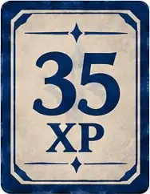
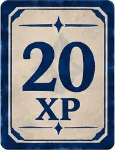

Crimson
Red
Four captains. A chain of disputed islands. Armies to command, monsters to face, and outposts worth holding.


Each turn gives you two orders. March your army groups, attack rivals or monsters, recruit at your port, and take control of outposts. Skill Cards create tactical openings. XP from monsters and territory at the end decide who wins.
See how the game works →Nineteen connected hexes link the four home ports, four outposts, and three monster lairs.
Each captain starts from a different edge of the island chain.
Red
Blue
Yellow
Green
Army groups, monsters, Skill Cards, and XP each serve a different purpose during a match.
Swordsmen, Archers, and Giants use shared group HP. One group occupies one hex.
View the armies →02Three lairs hold neutral enemies. Defeat a monster to draw one XP reward.
Open the bestiary →03The red deck adds tactical abilities. Hold up to seven cards and choose the right moment.
About Skill Cards →04The blue deck has sixteen physical cards across four denominations.
Browse the XP deck →Ten short steps cover setup, movement, combat, monsters, outposts, cards, and scoring.